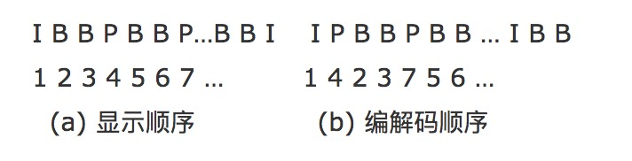

I、P、B 帧
要搞懂 DTS 和 PTS ，首先要先了解一下 I、P、B 帧。
- I 帧 ： 帧内编码帧 又称intra picture，I 帧通常是每个 GOP（MPEG 所使用的一种视频压缩技术）的第一个帧，经过适度地压缩，做为随机访问的参考点，可以当成图象。I帧可以看成是一个图像经过压缩后的产物。可独立解码。
- P 帧 ： 前向预测编码帧 又称predictive-frame，P 帧图像只采用前向时间预测，可以提高压缩效率和图像质量。
- B 帧 ： 双向预测内插编码帧 又称bi-directional interpolated prediction frame，可以大大提高压缩倍数。
I P B 帧的不同：
I 帧:自身可以通过视频解压算法解压成一张单独的完整的图片。
P 帧：需要参考其前面的一个 I 帧 或者 P 帧来生成一张完整的图片。
B 帧:则要参考其前一个 I 或者 P 帧及其后面的一个 P 帧来生成一张完整的图片。
两个 I frame 之间形成一个 GOP，在 x264 中同时可以通过参数来设定bf的大小，即：I 和 P 或者两个 P 之间 B 的数量。
通过上述基本可以说明如果有 B frame 存在的情况下一个 GOP 的最后一个 frame 一定是 P.
这就带来一个问题：在视频流中，先到来的 B 帧无法立即解码，需要等待它依赖的后面的 I、P 帧先解码完成，这样一来播放时间与解码时间不一致了，顺序打乱了，那这些帧该如何播放呢？这时就需要我们来了解另外两个概念：DTS 和 PTS。
DTS、PTS
DTS、PTS 的概念如下所述：
- DTS（Decoding Time Stamp）：即解码时间戳，这个时间戳的意义在于告诉播放器该在什么时候解码这一帧的数据。
- PTS（Presentation Time Stamp）：即显示时间戳，这个时间戳用来告诉播放器该在什么时候显示这一帧的数据。
虽然 DTS、PTS 是用于指导播放端的行为，但它们是在编码的时候由编码器生成的。
在视频采集的时候是录制一帧就编码一帧发送一帧的，在编码的时候会生成 PTS，这里需要特别注意的是 frame（帧）的编码方式，在通常的场景中，编解码器编码一个 I 帧，然后向前跳过几个帧，用编码 I 帧作为基准帧对一个未来 P 帧进行编码，然后跳回到 I 帧之后的下一个帧。编码的 I 帧和 P 帧之间的帧被编码为 B 帧。之后，编码器会再次跳过几个帧，使用第一个 P 帧作为基准帧编码另外一个 P 帧，然后再次跳回，用 B 帧填充显示序列中的空隙。这个过程不断继续，每 12 到 15 个 P 帧和 B 帧内插入一个新的 I 帧。P 帧由前一个 I 帧或 P 帧图像来预测，而 B 帧由前后的两个 P 帧或一个 I 帧和一个 P 帧来预测，因而编解码和帧的显示顺序有所不同，如下所示：

假设这里视频采集到的帧是这样子的
I B B P B B P
那么它的 PTS 对应的就是
PTS：1 2 3 4 5 6 7
编码顺序是：
1 4 2 3 7 5 6
推流顺序也是按照编码顺序去推的，即
I P B B P B B
那么接收断收到的视频流也就是
I P B B P B B
这时候去解码，也是按照收到的视频流一帧一帧去解的了，接收一帧解码一帧，因为在编码的时候已经按照 I、B、P 的依赖关系编好了，接收到数据直接解码就好了。
那么解码的顺序就是：
1 | I P B B P B B |
可以看到解码出来对应的 PTS 不是顺序的，为了正确显示视频流，这时候我们就必须按照 PTS 调整解码后的 frame(帧)，即
1 | I B B P B B P |
还不明白的话可以看下面的图：

如上图：
I frame 的解码不依赖于任何的其它的帧.而 p frame 的解码则依赖于其前面的 I frame 或者 P frame. B frame 的解码则依赖于其前的最近的一个 I frame 或者 P frame 及其后的最近的一个 P frame.
音视频同步：
上面说了视频帧、DTS、PTS 相关的概念。我们都知道在一个媒体流中，除了视频以外，通常还包括音频。音频的播放，也有 DTS、PTS 的概念，但是音频没有类似视频中 B 帧，不需要双向预测，所以音频帧的 DTS、PTS 顺序是一致的。
音频视频混合在一起播放，就呈现了我们常常看到的广义的视频。在音视频一起播放的时候，我们通常需要面临一个问题：怎么去同步它们，以免出现画不对声的情况。
要实现音视频同步，通常需要选择一个参考时钟，参考时钟上的时间是线性递增的，编码音视频流时依据参考时钟上的时间给每帧数据打上时间戳。在播放时，读取数据帧上的时间戳，同时参考当前参考时钟上的时间来安排播放。这里的说的时间戳就是我们前面说的 PTS。实践中，我们可以选择：同步视频到音频、同步音频到视频、同步音频和视频到外部时钟。